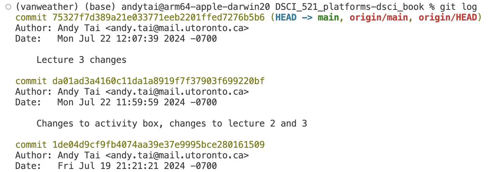
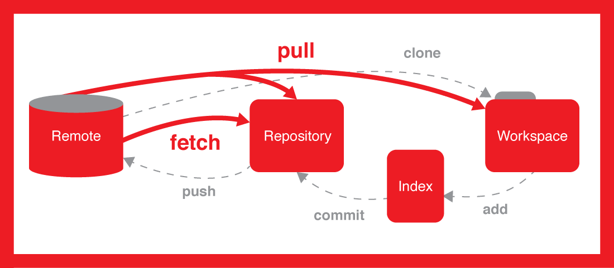
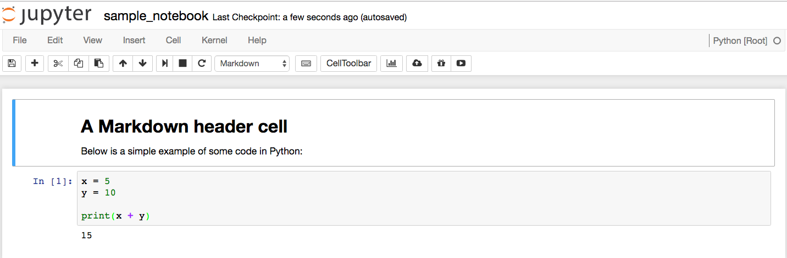

Git: History, Conflicts, and Ignores
Learning outcomes
- Explore the Git history via
git login the terminal and GitHub. - Compare commits using
git diffin the terminal and GitHub. - Solve merge conflicts at the command line and in Positron.
- Save transitory changes with
git stash. - Manage to avoid pushing specific local files by including a
.gitignore. - Differenciate among different ways to restore your project history (
git reset --hard/--soft,git revert) when working on an older version of a project.
Platform in focus Git and GitHub
Introduction
In this lecture, we’ll explore how to view your Git history and restore older versions of files. Understanding your project’s history is crucial for tracking changes and fixing mistakes. Let’s dive into the different methods for accessing your commit history and how to revert to previous file versions when needed.
Viewing your Git history and restoring an older version of the file
Do you remember the commit messages that we used to write at the time of making a commit, for saving the state of a project? It is possible to have a look at the history of the full project with any of these 3 different methods
You can view the Git history of a project in two main ways.
On the remote, you can use GitHub through the repository’s code commit view.
On your computer, you can use Jupyter Lab through the repository’s code commit view or the terminal by using the git log command.
Notes: Now we have a project, but only 2 commits (the initial creation and adding us as the author). Let’s now add a couple more commits to generate a history that we can view and experiment with by editing our README.md.
Steps to follow:
Step 1: Use the pen tool to change the README header from the default (repo name) to a more proper English title for the project. Click on the big green button “Commit changes” to save your work.
Step 2: Use the pen tool to add today’s date as the project start date to the README. Click on the big green button “Commit changes” to save your work.
Step 3: Use the pen tool to add a fictional list of software dependencies for your project (e.g. R and Python) to the README. Click on the big green button “Commit changes” to save your work.
Step 4: “Accidentally” delete the list of dependencies you just created. Click on the big green button “Commit changes” to save your work.
Step 5: Bring all these changes down to your local computer by typing
git pullfrom inside the cloned repo on your laptop using Git Bash/terminal (hint - open the file locally to see that it looks as expected to ensure you did things correctly).
On GitHub, on the repo’s landing page click “N commits” link (where N is the number of commits made on the repo). Now we have a project, but only 3 commits. You can identify all parts of each commit, including the day it was made, author, hash. You can also go back to the repository at the moment of making this change by clicking the <> button.
If you want to access your project information using the terminal you can use the git log command. Pay attention that here you are looking at the long version of the hash and not the 7-character long version displayed by default in Jupyter Lab or GitHub. In both cases, you will be able to identify the commit using its hash.

Adding the flag --oneline to the command git log will provide you a different format for the output, in this case, you get a succint version of the information of each commit.
The terminal allows greater flexibility when it comes to obtaining information about your project. If you would like to know what other possibilities you have for using the git log command, you can access the help by typing the command git log --help.
We have covered three distinct methods for viewing your project’s history. Prior to starting the activities, give them a try yourself in an example Git repository!
Viewing the history of a project
There are two ways to view the Git history of a project: you can either use the repository’s code commit view on GitHub, or you can use the git log command on your local machine.
Steps to follow:
- Step 1: On GitHub, on the repo’s landing page click “\(N\) commit” link (where \(N\) is the number of commits made on the repo, yours should be around 6).
- Step 2: On your laptop, from inside your Git repository type
git logat the command line. You can usegit log --onelinefor more succinct output or the alias shortcutglthat we created.- You can navigate this log by scrolling with the mouse, arrow keys, or by the same commands we used with
manin the first lecture- q = quit
- b / Space = up/down
- / + search term + Enter = search for a word
- n / N go to next/previous match for the search term
- You don’t need to memorize these commands, they’re here as a resource if you wish to use them instead of the mouse and arrow keys.
- You can navigate this log by scrolling with the mouse, arrow keys, or by the same commands we used with
What are the main methods to view your Git history?
A. Using GitHub through the repository’s code commit view
B. Using Jupyter Lab through the repository’s code commit view
C. Using the terminal with the git log command
D. All of the above
Reflection point
How similar are the local and webpage log views?? Do you get the same information from both? Which seems easier to read/navigate?
Comparing commits with git diff
git log tells you which commits exist. git diff tells you what changed.
Comparing changes you have not committed yet
Say you edited README.md twice: you staged the first edit with git add, then kept working. git status reports the two edits separately:
Output
On branch main
Changes to be committed:
(use "git restore --staged <file>..." to unstage)
modified: README.md
Changes not staged for commit:
(use "git add <file>..." to update what will be committed)
(use "git restore <file>..." to discard changes in working directory)
modified: README.mdgit diff shows the changes that are not staged, the second group in that output:
Output
diff --git a/README.md b/README.md
index 8656b4a..20244b2 100644
--- a/README.md
+++ b/README.md
@@ -6,3 +6,5 @@ Start date: 2026-09-01
- Python 3.12
- R
+
+## Usagegit diff --staged shows the changes that are staged, the ones that will go into your next commit:
Output
diff --git a/README.md b/README.md
index fbb4751..8656b4a 100644
--- a/README.md
+++ b/README.md
@@ -4,5 +4,5 @@ Start date: 2026-09-01
## Dependencies
-- Python
+- Python 3.12
- RSo the two commands match the two headings in git status:
git status heading |
Command that shows those changes |
|---|---|
Changes to be committed |
git diff --staged |
Changes not staged for commit |
git diff |
To read a diff:
---is the old version of the file,+++is the new one.@@ -4,5 +4,5 @@says which lines this chunk covers.- Lines starting with
-were removed, lines starting with+were added. - Lines starting with a space are unchanged, and are shown for context.
A changed line shows up as a - and a + pair, because Git works line by line: it does not know you edited part of a line, only that the old line went away and a new one took its place.
Comparing two commits
Take this history:
Output
f3db3d9 Add dependency list
1f0d470 Make heading more precise
42fc6a8 Initial commitGive git diff two SHAs and it compares them, oldest first:
Terminal
git diff 42fc6a8 f3db3d9Output
diff --git a/README.md b/README.md
index f538d05..fbb4751 100644
--- a/README.md
+++ b/README.md
@@ -1,3 +1,8 @@
-# Project
+# Milk Tea Analysis
Start date: 2026-09-01
+
+## Dependencies
+
+- Python
+- RGive it a single SHA, as in git diff 1f0d470, and it compares that commit to the files you have right now.
Order matters. Swapping the two SHAs swaps the - and + lines, which makes it look like the change happened backwards.
Comparing commits on GitHub
On GitHub, click any commit in the “N commits” list to see the same information as git diff, with removals in red and additions in green.
To compare two commits that are not next to each other, use the compare view by adding /compare/<older-sha>..<newer-sha> to the repository URL:
Output
https://github.ubc.ca/mds-2026-27/DSCI_521_lab1_ilm/compare/42fc6a8..f3db3d9Everything git diff can do is in the official git diff documentation.
Restoring an older version of a file
Oh no! We realize by viewing the history that we made a mistake! We didn’t mean to delete our list of dependencies. Worry not! We can now take advantage that we have been tracking this file under version control by using git restore to retrieve an older version of the file to replace the current version.
Let’s restore the version of the file BEFORE we deleted the software dependency list.
Steps to follow:
Step 1: Examine the log to identify the version of the file you want to revert to and note its short SHA-1 (the first few characters of the commit ID). You’ll need this to specify the exact point in time from which to retrieve the file.
Step 2: Next, use the
git restorecommand in the terminal to retrieve the file:git restore --source SHORT_SHA-1 FILENAME(you can also use-sas a shorthand for--source).Step 3: When restoring the file, it is added to the working area. To save the restored version of the file to the Git repository, you need to
addandcommitit, just like any other modification.Step 4: Don’t forget to run
git pushto back up the file on GitHub!
Deal with merge conflicts at the command line
When you run git pull git will do two things for you: it will fetch the content from the remote and then merge it into your repository. When you are working alone on a repository git will likely be able to do these two things automatically every time you pull, and you don’t need to intervene manually.
However, when working with collaborators there are usually changes made in more than one place (e.g., you made changes in the local repo on your laptop at the same time as your collaborator updated the remote repo on GitHub). Eventually, the same document will have been changed in different places and this can create issues for git regarding how to consolidate and merge these changes together. There are two distinct merge scenarios for when a document is changed in two places:
Place 1: Changes to a document where different lines are modified (Git can automatically merge these and will do so when you
pull).Place 2: Changes to a document where the same line(s) are modified (Git CANNOT automatically merge these and will complain that you have a “merge conflict” when you
pull).
In the second case, you have to help git by telling it which changes you want to keep. Git kindly points you to where the problem is in the output from git pull where it mentions which files have been modified from two source. You will need to edit this file to make it look how you want and then add it to the staging area and commit.

How do you know you have a merge conflict?
You usually find out when you try to push and Git refuses. Two different problems cause that rejected push, and only the second one is a merge conflict:
- Your branch and the remote branch have diverged, and Git wants you to say how to reconcile them.
- Git tried to reconcile them and could not, because the same lines were changed in both places.
You have to fix the first problem before you find out whether you have the second one.
Problem 1: your branch and the remote have diverged
You commit some changes locally, and changes were also made on GitHub (by a collaborator, by you on a different computer, or by you editing a file in the GitHub web interface). git status shows that the two histories have drifted apart:
Output
On branch main
Your branch and 'origin/main' have diverged,
and have 2 and 14 different commits each, respectively.
(use "git pull" if you want to integrate the remote branch with yours)
nothing to commit, working tree cleanIf you try to git push origin main in this state, the push is rejected:
Output
To github.ubc.ca:mds-2026-27/DSCI_521_lab1_ilm.git
! [rejected] main -> main (non-fast-forward)
error: failed to push some refs to 'github.ubc.ca:mds-2026-27/DSCI_521_lab1_ilm.git'
hint: Updates were rejected because the tip of your current branch is behind
hint: its remote counterpart. If you want to integrate the remote changes,
hint: use 'git pull' before pushing again.
hint: See the 'Note about fast-forwards' in 'git push --help' for details.The remote has changes you do not have, and Git will not let you push until you pull them down.
So you run git pull origin main, and Git refuses again:
Output
From github.ubc.ca:mds-2026-27/DSCI_521_lab1_ilm
* branch main -> FETCH_HEAD
hint: You have divergent branches and need to specify how to reconcile them.
hint: You can do so by running one of the following commands sometime before
hint: your next pull:
hint:
hint: git config pull.rebase false # merge
hint: git config pull.rebase true # rebase
hint: git config pull.ff only # fast-forward only
hint:
hint: You can replace "git config" with "git config --global" to set a default
hint: preference for all repositories. You can also pass --rebase, --no-rebase,
hint: or --ff-only on the command line to override the configured default per
hint: invocation.
fatal: Need to specify how to reconcile divergent branches.fatal: Need to specify how to reconcile divergent branches does not mean you have a merge conflict. Git has not tried to combine the two histories yet. It will not guess whether you want to merge or rebase, and it will keep refusing until you tell it.
When you see this, run this one command:
Terminal
git config pull.rebase falseThis tells Git that in this repository, pull reconciles divergent branches by merging. That was Git’s default in older versions, and it is what we use in this course. Merging leaves your commits and the remote’s commits as they are, so when something goes wrong it is easier to see what happened and recover.
git config pull.rebase false records a setting, it does not pull anything. You still need to run git pull origin main afterwards.
Run it once per repository. To set it for every repository on your computer, run git config --global pull.rebase false instead.
Once Git knows how to reconcile, one of two things happens.
Outcome A: Git merges the changes for you
If the changes are on different lines, Git merges them for you and reports the merge commit:
Output
From github.ubc.ca:mds-2026-27/DSCI_521_lab1_ilm
* branch main -> FETCH_HEAD
Merge made by the 'ort' strategy.
README.md | 4 ++++
analysis.ipynb | 2 +-
2 files changed, 5 insertions(+), 1 deletion(-)There is nothing to fix. git push origin main now works:
Output
Enumerating objects: 35, done.
Counting objects: 100% (34/34), done.
Delta compression using up to 8 threads
Compressing objects: 100% (30/30), done.
Writing objects: 100% (31/31), 2.46 MiB | 10.86 MiB/s, done.
Total 31 (delta 3), reused 0 (delta 0), pack-reused 0 (from 0)
To github.ubc.ca:mds-2026-27/DSCI_521_lab1_ilm.git
37deb72..ded3e69 main -> mainOutcome B: you have a merge conflict
If the same lines were changed in both places, Git cannot decide for you. The same git pull origin main ends with extra lines:
Output
From github.ubc.ca:mds-2026-27/DSCI_521_lab1_ilm
* branch main -> FETCH_HEAD
Auto-merging README.md
CONFLICT (content): Merge conflict in README.md
Automatic merge failed; fix conflicts and then commit the result.This is a merge conflict. The words to look for are CONFLICT and Automatic merge failed. Git names the file it could not merge, README.md here.
git status confirms where you are and what to do next:
Output
On branch main
Your branch and 'origin/main' have diverged,
and have 1 and 1 different commits each, respectively.
(use "git pull" if you want to integrate the remote branch with yours)
You have unmerged paths.
(fix conflicts and run "git commit")
(use "git merge --abort" to abort the merge)
Unmerged paths:
(use "git add <file>..." to mark resolution)
both modified: README.md
no changes added to commit (use "git add" and/or "git commit -a")The file is listed under Unmerged paths as both modified: you and someone else edited it, and you have to pick what to keep.
Merge conflicts are not bad. They happen to everyone, and you need to know how to tell Git what to do.
Changed your mind? git merge --abort undoes the merge and puts your repository back where it was before you pulled. Nothing is lost and you can try again.
What of the following practices do you think could be a good idea in order to avoid having merge conflicts?
A. Push changes to the remote repository daily before starting to work on your local changes.
B. Pull changes to the remote repository daily before starting to work on your local changes.
C. Stash changes using the terminal before pulling potentially new conflicting information from the remote repository.
D. Work only locally or only in the remote repository.
What do you do to fix a merge conflict?
Steps to follow:
Step 1: Open the file that has a conflict (the output of
git pullwill tell you which files) in a plain text editor (e.g., VS Code).Step 2: Look for the conflict (hint: search for
<<<<<<< HEAD).Step 3: Fix the conflict by deleting everything you don’t want to keep in the file, including the
<<<<<,=====, and>>>>>markers that Git added. Note: VS Code will help you with this by color highlighting the changes and providing buttons you can click to accept either the current or incoming change (or both). Using these buttons instead of modifying the file manually can save you from mistakes that can take a lot of time to troubleshoot and fix, so we highly recommend using this feature.Step 4: After the file looks as you want it,
addit andcommityour changes. Then you canpushthem up to GitHub.
Here’s an example of a text file with a conflict and how it can look after you have resolved it:
README.md
Some text up here
that is not part of the merge conflict,
but just included for context.
<<<<<<< HEAD
We added this line in our last commit
=======
This line was added somewhere else
>>>>>>> dabb4c8c450e8475aee9b14b4383acc99f42af1d<<<<<<< HEADprecedes the change you made (that you couldn’t push)=======is a separator between the conflicting changes>>>>>>> dabb4c8c450e8475aee9b14b4383acc99f42af1dflags the end of the conflicting change you pulled from GitHub
Here we keep both lines, so we delete the three marker lines and leave the rest:
README.md
Some text up here
that is not part of the merge conflict,
but just included for context.
We added this line in our last commit
This line was added somewhere elseYou are not limited to the lines Git offers you. Keeping neither and writing something new is a perfectly good resolution:
README.md
Some text up here
that is not part of the merge conflict,
but just included for context.
We combined both lines by hand while resolving the conflict.Now git add README.md. git status shows the conflict is settled but the merge is not finished:
Output
On branch main
Your branch and 'origin/main' have diverged,
and have 1 and 1 different commits each, respectively.
(use "git pull" if you want to integrate the remote branch with yours)
All conflicts fixed but you are still merging.
(use "git commit" to conclude merge)
Changes to be committed:
modified: README.mdgit commit -m "Resolve merge conflict in README.md" concludes the merge:
Output
[main 8aa69f2] Resolve merge conflict in README.mdYour history now contains the remote’s work, so git push origin main is accepted:
Output
Enumerating objects: 10, done.
Counting objects: 100% (10/10), done.
Delta compression using up to 8 threads
Compressing objects: 100% (4/4), done.
Writing objects: 100% (6/6), 616 bytes | 616.00 KiB/s, done.
Total 6 (delta 1), reused 0 (delta 0), pack-reused 0 (from 0)
To github.ubc.ca:mds-2026-27/DSCI_521_lab1_ilm.git
fbb6482..8aa69f2 main -> mainTrue or False?
You can solve a merge conflict by not accepting either the current changes or the incoming changes.
Conflicts that are not about lines
Not every conflict is two people editing the same line. If you delete a file while someone else edits it, Git cannot decide whether the file should exist, and reports a modify/delete conflict:
Output
CONFLICT (modify/delete): notes.md deleted in HEAD and modified in 8a4a9c4. Version 8a4a9c4 of notes.md left in tree.
Automatic merge failed; fix conflicts and then commit the result.There are no <<<<<<< markers to edit here, because there is nothing to mark up. Git leaves the other person’s version of the file in your working directory and git status describes the conflict as deleted by us:
Output
Unmerged paths:
(use "git add/rm <file>..." as appropriate to mark resolution)
deleted by us: notes.mdYou resolve it by saying which outcome you want:
git add notes.mdkeeps the file, with the other person’s changes.git rm notes.mdconfirms the deletion.
Then git commit as usual. The other kinds of conflict Git can report are listed in the git merge documentation.
What about merge conflicts of Jupyter notebooks?
First - a bit about what a Jupyter notebook is made up of
.ipynbfiles are “plain” text files, and we can view them in a plain text editor and make some sense of them- The contents of the notebook are encoded in JSON format, which means that there are many brackets in the file, which can make it hard to read for humans (but easy for machines).
For example, this notebook of 2 cells:

is encoded by the following JSON:
sample_notebook.ipynb
{
"cells": [
{
"cell_type": "markdown",
"metadata": {},
"source": [
"# A Markdown header cell\n",
"\n",
"Below is a simple example of some code in Python:"
]
},
{
"cell_type": "code",
"execution_count": 1,
"metadata": {
"collapsed": false
},
"outputs": [
{
"name": "stdout",
"output_type": "stream",
"text": [
"15\n"
]
}
],
"source": [
"x = 5\n",
"y = 10\n",
"\n",
"print(x + y)"
]
}
],
"metadata": {
"anaconda-cloud": {},
"kernelspec": {
"display_name": "Python [Root]",
"language": "python",
"name": "Python [Root]"
},
"language_info": {
"codemirror_mode": {
"name": "ipython",
"version": 3
},
"file_extension": ".py",
"mimetype": "text/x-python",
"name": "python",
"nbconvert_exporter": "python",
"pygments_lexer": "ipython3",
"version": "3.5.1"
}
},
"nbformat": 4,
"nbformat_minor": 0
}Version control and Jupyter notebooks
Notebooks are plain text, so Git can track them, but the JSON above shows the problem: a one-line edit to a cell can move execution counts, outputs and metadata around, and a conflict in the middle of that is painful to fix by hand. If you have ever resolved a notebook conflict by deleting the file and re-downloading it, this is why.
Three things make notebooks much easier to live with:
Commit early and commit often. Most notebook conflicts happen because two people changed the same notebook over a long stretch of time. Small commits and frequent pulls are still the best defence.
Clear your outputs before committing. Outputs are the bulkiest and most conflict-prone part of the JSON, and they can be regenerated.
nbstripoutcan do this automatically every time you commit.Use a notebook-aware diff tool.
nbdimeunderstands notebook structure, so it compares cells instead of JSON.nbdiffandnbmergeare its command line versions, andnbdiff-webandnbmerge-webopen a side-by-side view in your browser. Once installed,nbdime config-git --enable --globalmakesgit diffandgit mergeuse it for.ipynbfiles automatically.
VS Code and Positron also render notebook diffs cell by cell in their Source Control panes, which is often enough to see what changed without leaving the editor.
If a notebook conflict does get away from you, git merge --abort puts you back where you started so you can pull again with one of these tools in place.
Stashing local non-committed changes before pulling
We have learned that if there are changes on your remote repo in GitHub and you already have local committed changes, you will need to pull before you can push. If the local and remote changes are in the same lines, you will have to resolve the resulting merge conflict, otherwise git will merge automatically. But what if you have just started to make changes to a file when you realize that you forgot to pull before you started to work? The first thing to do is to try to pull, if you’re lucky there are either no new changes or they are not in the same file you modified. If they are in the same file, you will get an error message like this:
Output
error: Your local changes to the following files would be overwritten by merge:
README.md
Please commit your changes or stash them before you merge.
AbortingAs you can see, you could finish off your changes, add them, commit them, and then pull. This is possible if the changes you are about to make locally will not affect the files that have been updated remotely. However, if you’re about to change some of the files that have also been changed remotely it is better to run git stash, which removes your local changes from the working area and and saves them in another location (you can think of this as a secrete pocket which git does not care about when pulling from the remote repo, and from which you can take out the changes again when you need them). You can then do git pull, and follow up with a git stash pop to put your changes back from the stash to the working area, and then carry on working.
This workflow can save you from running into merge conflicts, as long as you have not already made modifications to the same lines as you are pulling down. If you have already modified the same file that was updated remotely, you will still run into a merge conflict when you do git stash pop. Stashing is also great when you are working on one feature but realize that you should actually work on another unrelated feature first, you can stash your existing work (instead of manually saving it elsewhere) and finish working on the most urgent feature first.
Tell Git to ignore irrelevant files using a .gitignore file
You may have encountered this before:
Terminal
git statusOutput
On branch main
Untracked files:
(use "git add <file>..." to include in what will be committed)
.ipynb_checkpoints/
.DS_Store
no changes added to commit (use "git add" and/or "git commit -a")Git is letting us know about untracked files (ones we have never committed before). We don’t care about these files. We’d prefer not to have them clutter our view (so we can pay attention to files we do want to track). What do we do?
Create a .gitignore file
Using the plain text editor of your choice (mine is VS Code) create a file called .gitignore inside your Git repo. To do this with VS Code, I would type:
Terminal
code .gitignoreInside the text file, list the files and folders you would like to ignore, one per line. For example:
.gitignore
.ipynb_checkpoints/
.DS_StoreSave the file, and add and commit it with Git. Then try git status again. You should see:
Output
On branch main
nothing to commit, working tree clean.gitignore tips and tricks
Listing files one per line works, but gets tedious. A .gitignore line can also be a pattern:
.gitignore
# ignore every CSV file, anywhere in the repo
*.csv
# ...but keep this one
!data/lookup-table.csv
# ignore a folder and everything in it
output/
# ignore .ipynb_checkpoints in any subdirectory
**/.ipynb_checkpoints/*matches any part of a filename, so*.csvcatches every CSV file.!un-ignores something that an earlier pattern caught. Order matters: the!line has to come after the pattern it is undoing.- A trailing
/means “this is a folder”. #starts a comment.
The full pattern syntax is in the official gitignore documentation.
.gitignore only applies to files Git is not already tracking.
If you have already committed data.csv, adding *.csv to .gitignore changes nothing, and git status keeps reporting your edits to it:
Output
Changes not staged for commit:
modified: data.csvYou have to tell Git to stop tracking it first:
Terminal
git rm --cached data.csvThis removes the file from Git while leaving it on your computer. Commit that change, and the .gitignore rule takes over from there. Be aware that the file stays in the history of the commits you already made, so this is not a way to remove a large file or a password from a repository.
Consider also creating a global .gitignore file so you do not have to write the same rules in every repository.
Let’s create a gitignore file in our 521 lab 2 repo.
Steps to follow:
Step 1: Use a text editor (e.g., VS Code, nano, Jupyter) to create a file called
.gitignorein your 521 lab 2 repo.Step 2: Add
**/.ipynb_checkpoints/to that file and save it.Step 3: Add and commit it with Git.
Step 4: Type
git statusand see if you no longer see.ipynb_checkpoints/as an untracked file.
True or false?
The .gitignore file itself can be committed and pushed to a remote repository.
Time travelling with git reset
Sometimes you do not want to fix the current state of a file, you want to move the whole branch back to an earlier commit. That is what git reset does.
Say git log --oneline shows this:
Output
fb962e0 (HEAD -> main) Add md demo
bcb541e Make heading more precise
5c01f2f Initial commitTo move the branch back to “Make heading more precise”, we run git reset bcb541e. Our log now shows this:
Output
bcb541e (HEAD -> main) Make heading more precise
5c01f2f Initial commitWhat happened to the changes from commit fb962e0? That depends on which flag you use. The commit is gone either way, but the changes it contained can end up in one of three places.
The three flavours of git reset
By default, git reset <sha> puts the changes back in the working area, as if you had made the edits but not run git add yet. This is what the message after the reset is telling you:
Output
Unstaged changes after reset:
M README.mdgit reset --soft <sha> keeps the changes staged instead, ready to commit again. It prints nothing, but git status shows where the changes went:
Output
On branch main
Changes to be committed:
(use "git restore --staged <file>..." to unstage)
modified: README.mdThis is the one to reach for when you committed too early, or wrote a commit message you regret: reset, then commit again with everything already staged.
git reset --hard <sha> throws the changes away. It prints nothing either, because there is nothing left to report. After git reset --hard 5c01f2f our log is just:
Output
5c01f2f (HEAD -> main) Initial commit| Flag | The commits are | Your changes end up |
|---|---|---|
--soft |
removed from the branch | staged |
(none, --mixed) |
removed from the branch | in the working area, unstaged |
--hard |
removed from the branch | discarded |
The details are in the official git reset documentation.
--hard is the only one of the three that destroys work. Run git status before you use it, and make sure you do not need anything it is about to discard.
Are the changes lost forever?
Not immediately. Git keeps a record of everywhere your branch has been in its “reflog”. Commits that are no longer part of any branch are called “dangling”, and they are cleared out at intervals rather than right away. So if you realise the mistake straight away, git reset bcb541e moves you forward again to the commit you just “deleted”.
Do not rely on this. Once Git clears the reflog, those changes are gone for good.
Undoing a commit without rewriting history
git reset works by pretending a commit never happened, which is a problem once that commit is on GitHub and other people have it.
git revert <sha> is the safe alternative. Instead of removing the old commit, it makes a new commit that undoes it, so the history stays intact and everyone else stays in sync. See the official git revert documentation.
Syncing with a remote after resetting
If the commit you reset away is already on GitHub, your local history is now behind the remote, and Git refuses to push. To overwrite what is on GitHub with your reset history, use:
Terminal
git push --force-with-lease origin mainThe “lease” is a safety check. Git overwrites the remote only if the remote is still where you last saw it. If someone pushed something in the meantime, your push is rejected instead of quietly destroying their work:
Output
! [rejected] main -> main (stale info)
error: failed to push some refs to 'github.ubc.ca:mds-2026-27/DSCI_521_lab1_ilm.git'stale info means “the remote moved and you have not looked at it yet”. Run git fetch origin, see what arrived, decide what to do with it, and then push again.
When the lease holds, Git tells you it rewrote the remote:
Output
+ 7c2695a...b78bf16 main -> main (forced update)Always --force-with-lease, never --force.
You will also see git push --force (or -f) written in blog posts and answers online. It does the same thing without the safety check: it overwrites the remote no matter what is there, so any commits pushed since you last fetched are gone, and nothing warns you first. --force-with-lease gives you the same power and catches that mistake, so there is no reason to use the shorter one.
Even with the lease, you are rewriting history that other people may have already pulled, so they will be out of sync with the remote. Force pushing is fine when the repository is yours alone, and something to agree on first when it is not. When in doubt, prefer git revert <sha>: it undoes the change with a new commit and leaves the shared history alone.
Other useful Git commands
These are not part of the workflow you need for the labs, but you will see them referred to often enough to be worth knowing about.
git fetch
Earlier we said that git pull does two things: it fetches the commits from the remote, then merges them into your branch.
git fetch does only the first half (this is the split shown in the figure at the start of the merge conflict section). It downloads the new commits and updates origin/main, your local record of where the remote branch is, but leaves your own files untouched:
Output
From github.ubc.ca:mds-2026-27/DSCI_521_lab1_ilm
0e38f69..ada2b64 main -> origin/mainNothing in your working directory changed, and git status now tells you what is waiting:
Output
On branch main
Your branch is behind 'origin/main' by 1 commit, and can be fast-forwarded.
(use "git pull" to update your local branch)
nothing to commit, working tree cleanThis is useful when you want to look before you leap. git log --oneline main..origin/main lists the commits you are about to receive, and git diff main origin/main shows what they change. When you are happy, git pull brings them in.
Two different git restore commands
git restore does different things depending on the flag, and the two uses are easy to confuse:
| Command | What it does |
|---|---|
git restore <file> |
Throws away uncommitted changes in the working area |
git restore --staged <file> |
Unstages a file, keeping your changes |
git restore --source <sha> <file> |
Brings back the version of a file from an older commit |
Only the last one reaches into the history, and it is the one we used earlier in this chapter. See the official git restore documentation.
Exercise: Accessing and Working with GitHub
Accessing and Working with GitHub
Objective: By completing this exercise, students will gain hands-on experience in accessing their GitHub home for MDS, creating, cloning, modifying, and pushing changes to a GitHub repository.
Instructions:
Access Your GitHub Home for MDS:
- Open your web browser and navigate to:
https://github.ubc.ca/MDS-2021-22/yourCWL_home- Replace
yourCWLwith your actual CWL. - Here you will find links to all the courses’ repositories and labs’ repositories.
- Hint: Bookmark this page for easy access to all relevant courses’ repositories.
Create a New Repository on GitHub:
- Visit GitHub.com.
- Create a new repository and ensure you add a README file during the setup process.
Clone the Repository:
- Clone the newly created repository to your local machine.
- Note: If your GitHub username is different from the username on your computer, you will need to configure your Git settings accordingly.
Terminal
git clone https://github.com/YOUR_GITHUB_USERNAME/YOUR_REPOSITORY_NAME.gitMake Changes to the README File:
- Open the README file in a text editor.
- Add some content or modify the existing content.
- Save your changes.
Add and Commit Your Changes:
- Stage the changes you made to the README file.
Terminal
git add README.md- Commit the changes with a descriptive message.
Terminal
git commit -m "Updated README with new content"Create a New File, Add, and Commit It:
- Create a new file in the repository (e.g.,
newfile.txt). - Add some content to the new file and save it.
- Stage the new file.
Terminal
git add newfile.txt- Commit the new file with a descriptive message.
Terminal
git commit -m "Added newfile.txt with initial content"- Create a new file in the repository (e.g.,
Push Your Changes to GitHub:
- Push the changes from your local repository to the remote repository on GitHub.
Terminal
git push origin mainConfirm Your Changes on GitHub:
- Go to your GitHub repository page.
- Confirm that the changes to the README file and the new file (
newfile.txt) are reflected in the repository.
View Your Git History:
- On GitHub, click on the “Commits” link on the repository’s landing page.
- On your local machine, use the
git logcommand to view the commit history.
Terminal
git log- Use the
git log --onelinecommand for a more concise view.
Terminal
git log --onelineRestore an Older Version of a File:
- Identify the commit hash for the version you want to restore.
- Use the
git restorecommand to revert to that version.
Terminal
git restore --source SHORT_SHA-1 FILENAME- Stage and commit the restored file.
Terminal
git add FILENAME git commit -m "Restored FILENAME to previous version"- Push the changes to GitHub.
Terminal
git push origin main
Questions:
- What are the steps to access your GitHub home for MDS?
- What are the steps to create a new repository on GitHub?
- What command do you use to clone a repository to your local computer?
- How do you add and commit changes to a file in a Git repository?
- What command do you use to push changes to GitHub?
- How do you view your Git history?
- How do you restore an older version of a file in a Git repository?